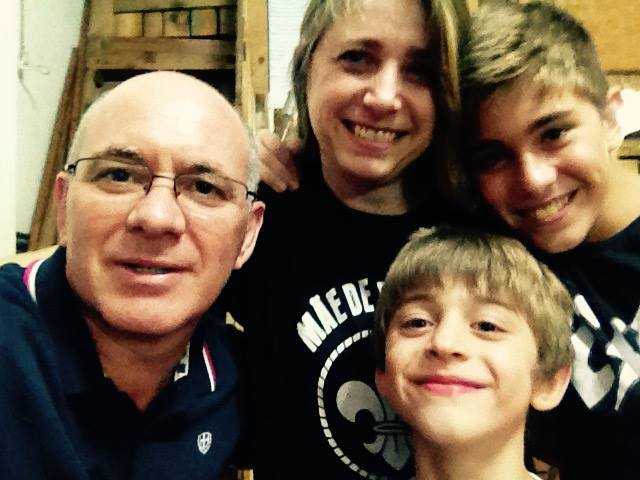
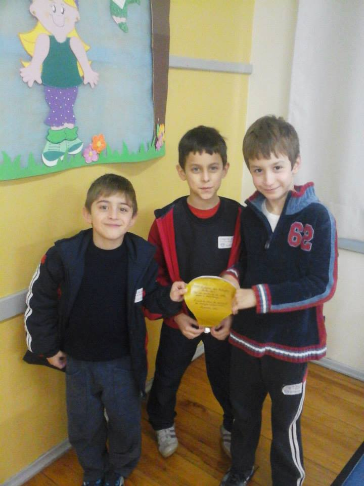
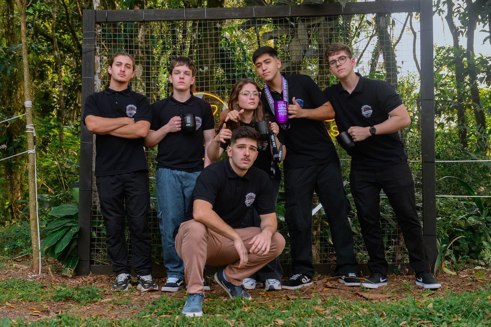
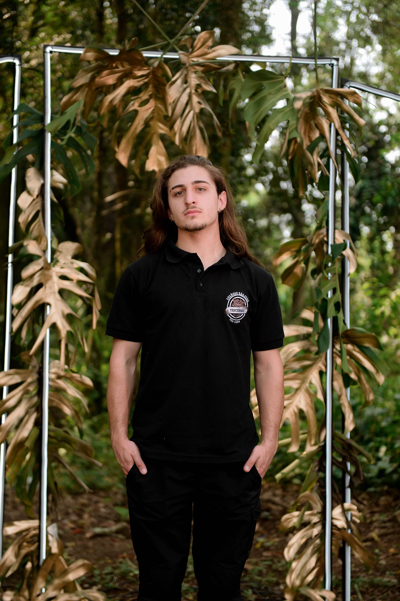
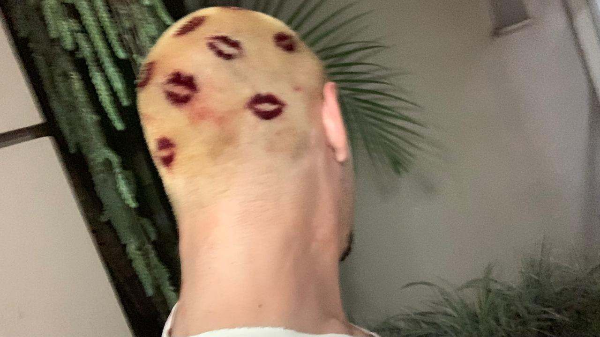
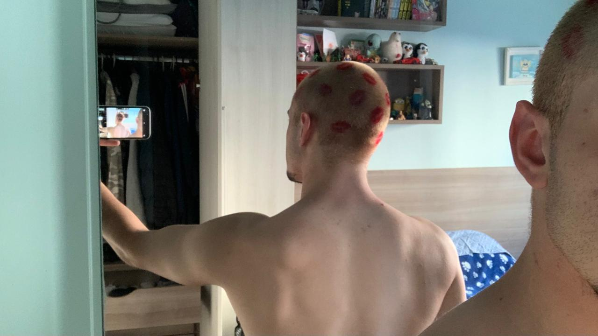
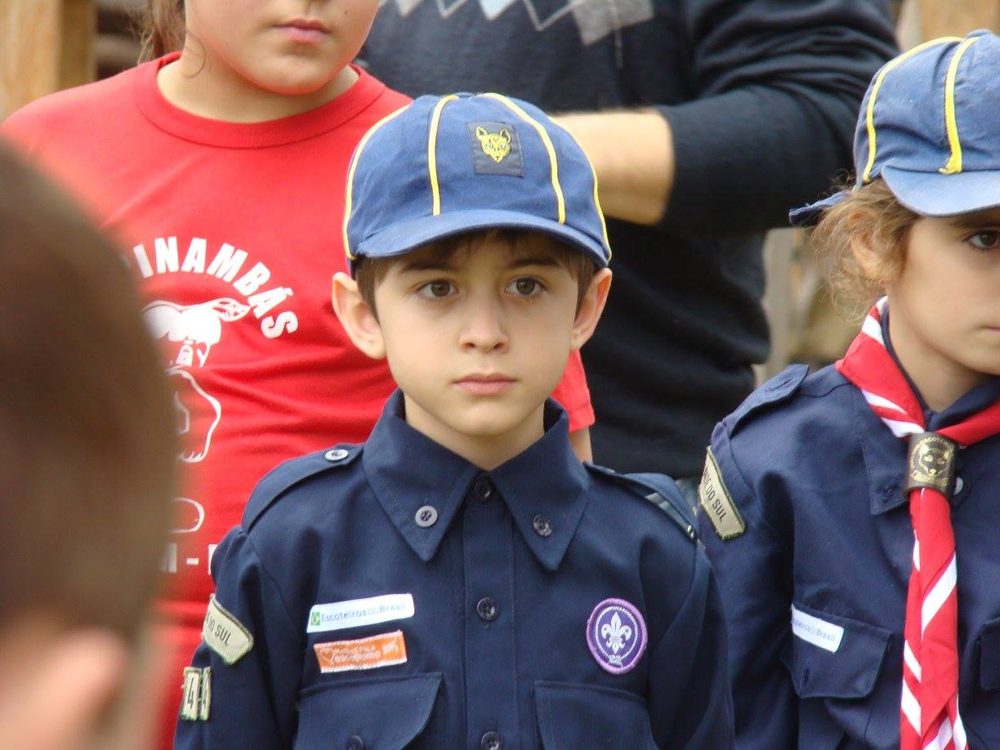
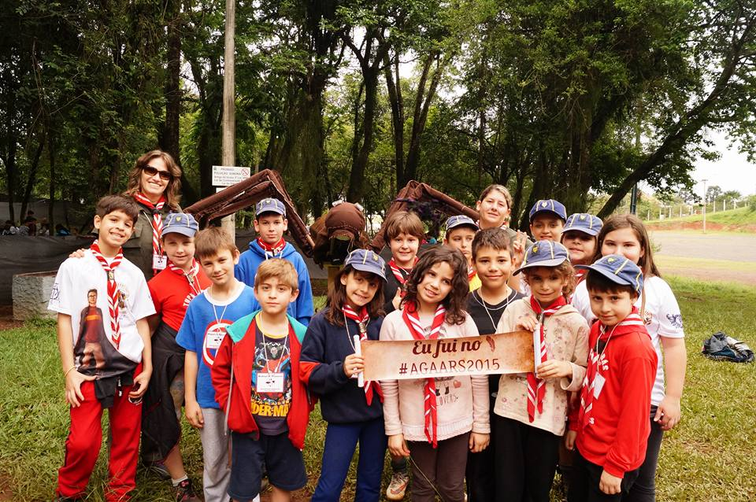
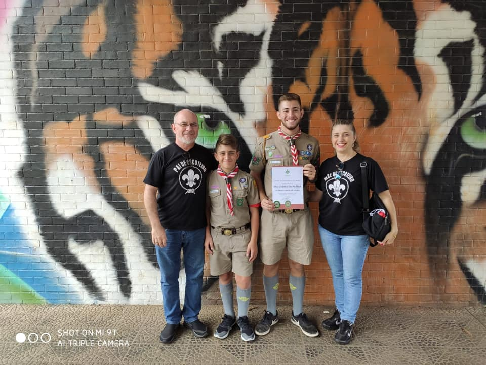
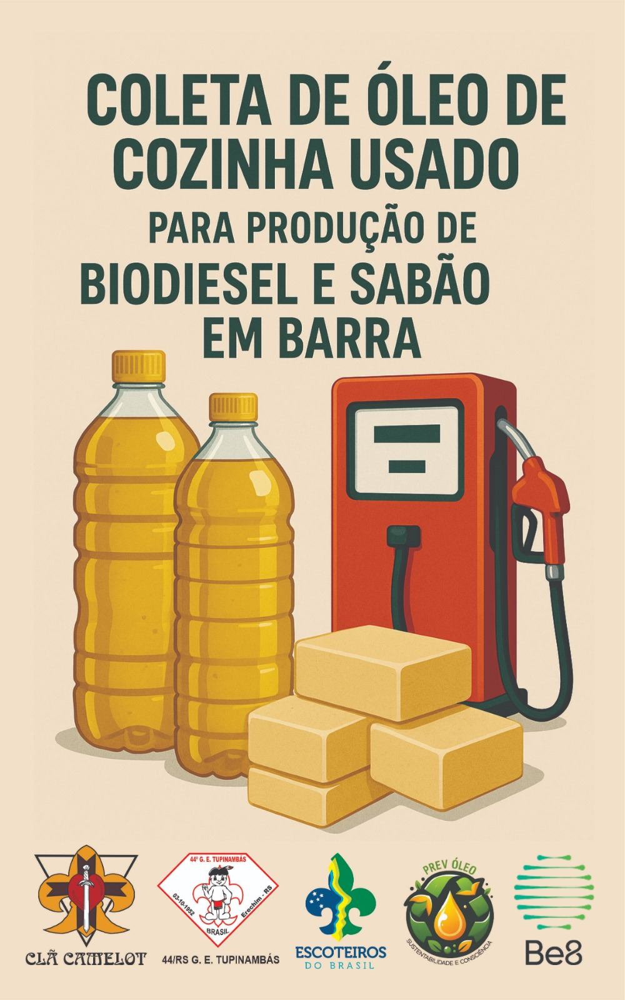

Rafael Brendler Pizarro
Meu nome é Rafael Brendler Pizarro, tenho 17 anos, sou natural de Erechim - Rio Grande do Sul, estudei no Colégio Franciscano São José desde os meus 7 anos e completei o Ensino Médio ano passado (2024), tenho um irmão 5 anos mais velho e faço aniversário dia 17/10.
  Após minha formatura combinei com alguns amigos de rasparmos a cabeça e com ajuda da minha namorada descolorimos o cabelo, para mim foi um momento muito marcante já que deixava meu cabelo crescer desde os meus 14 anos
 Neste ano(2025) completam-se 11 anos desde que entrei para o movimento escoteiro, no Grupo Escoteiro Tupinambás 44, nesse tempo tive muitas experiências diferentes como acampamentos regionais, nacionais e até um Jamboree Mundial, fazendo sempre novas amizades com pessoas de todo o mundo.
  O Jamboree Mundial que eu participei foi em 2023 na Coréia do Sul, vivemos experiências inesqueciveis lá.
Algumas reportagens sobre o acampamento do jornal Bom Dia de Erechim e Virtual FM 104.7:
Reportagem 1 Reportagem 2 Reportagem 3 Reportagem 4Na segunda página colocarei mais imagens da viagem e do acampamento.
Hoje no ramo Pioneiro fazemos mais atividades de cunho social e interação com outros grupos da mesma idade, no momento arrecadamos óleo usado para empresas de biodiesel e para produção de sabão. Ao clicar na imagem da campanha o instagram do nosso clã abrirá.
